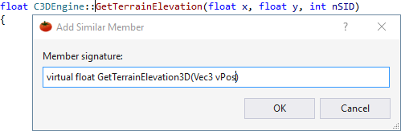
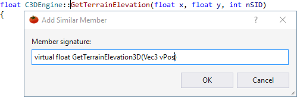

Add Similar Member
Open the Quick Action and Refactoring menu (Shift+Alt+Q) from a reference to an existing member to create a similar one. The new member is created in the class of the existing one.

Learn more.
Open the Quick Action and Refactoring menu (Shift+Alt+Q) from a reference to an existing member to create a similar one. The new member is created in the class of the existing one.

Learn more.